Tor Browser Settings
When you visit any website; By clicking the this icon in the search bar of your browser, you can see through which " Tor Circuit " you are connected to the website.

First of all, if we start with the certificate audit; For example, I am currently at "check.torproject.org" and can view information on whether this website is safe for communication.

Also, I can click the "More information" button to get more details and to assign specific permissions to the site.
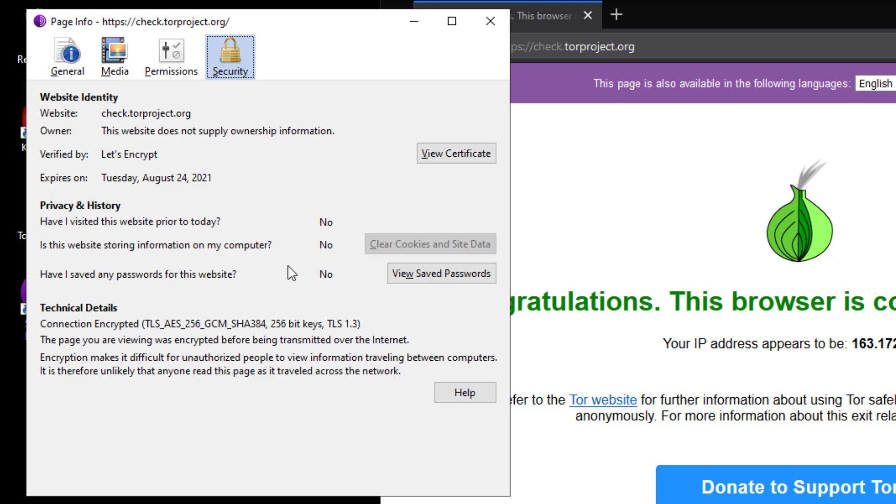
As you can see, I have received more detailed information about the certificate of the site.
Apart from the certificate details, you can set permissions for the current website from the " Permissions " tab. In order to change the permissions, you need to uncheck the "use default" option.

From the Media tab, you can obtain the information of the materials such as pictures and videos owned by the website and if you wish, you can block these contents.
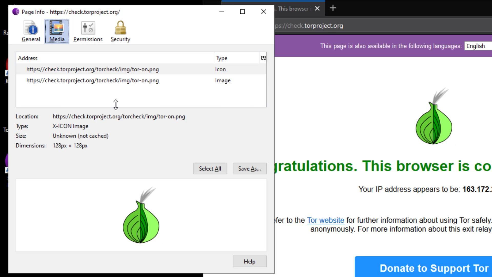
In the General tab, you can obtain general information such as the title and address of the website.
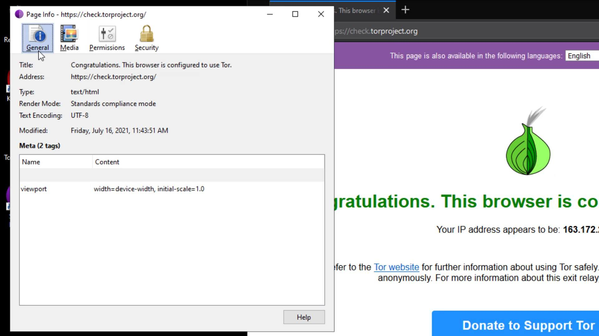
I also want to remind you that this feature, the ability to get information about the certificate and manage site permissions, is not only available in the Tor browser. I just wanted to talk about the purpose of use, in case you don't know or don't care if you know. Checking such information about the website you are visiting to and managing its permissions is a very good habit in terms of security. Even if you haven't paid attention to this until now, you have now learned that it is an important detail to pay attention to this part for your privacy.
You know Tor Circuit gives the information of the servers you are connected to in the Tor network.

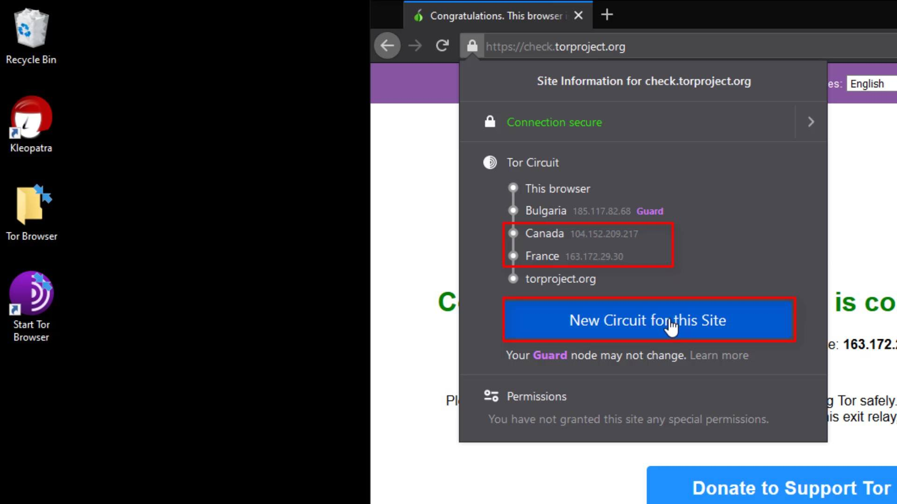
In addition, if you do not refresh manually, the circuit will automatically changed itself every 10 minutes except for the entry node.But why does the entry node, stays same despite the renewal process?
This is because the entry node in the circuit, is selected as "Guard". 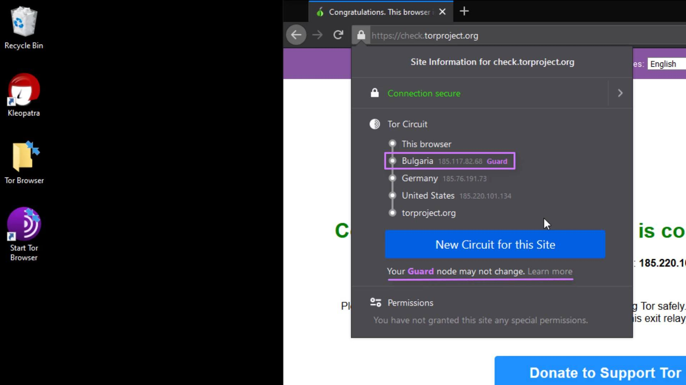
For more technical details, you can read the article published by the University of Minnesota from the link at this lecture resources.
The permissions section under the Tor Circuit shows the site-specific permissions. Now let's open "settings" to talk about other settings. I will cover the permissions issue again as i explain the settings in a moment. Now let's talk about "security level" and "new identify" buttons.

The security level button is a shortcut button that shows the security level setting in your browser and directs you to the settings when you want to change it.

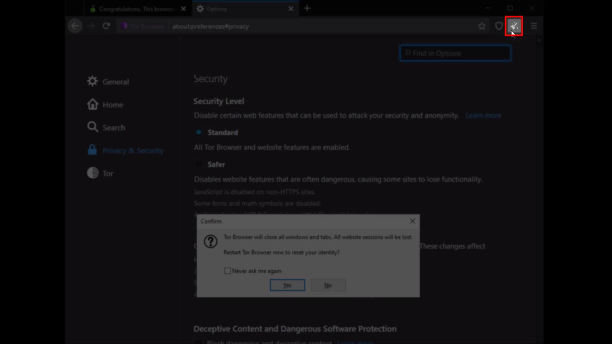
The "new identify" button, closes all existing tabs and sessions you have opened on the browser, and restarts the browser by resetting your identity.
The locations and functions of all these buttons may change with the updates over time. So the browser you are using while following this course may look a little different from mine. However, please note that such changes don't matter at the point of keep going to education, we are basically talking about what is necessary for safety in this course.
If the location of the buttons changes, you can find their location with a short lookup. If a new feature is added or existing features change, you can understand their use by reading short feature descriptions. In short, I want to say that you should always read new documents for more features and constantly focus on what you can pay more attention to for your own safety, not limiting yourself to what you have learned in this course. Of course, the more we strive to ensure our security, the more those who want to violate our security will do. For this reason, techniques and security methods will be constantly updated and will change over time. You can only stay safe as long as you are open to innovation.
After the brief explanation, let's open our browser settings and click on the " Privacy and Security " tab to browse the settings that concern our privacy .
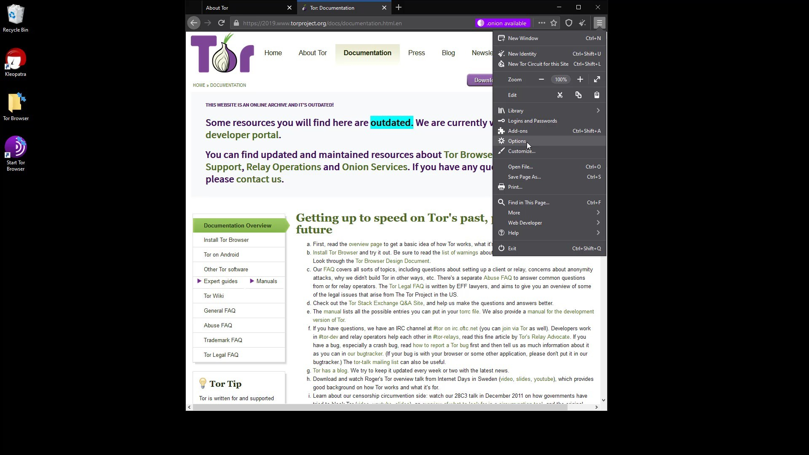
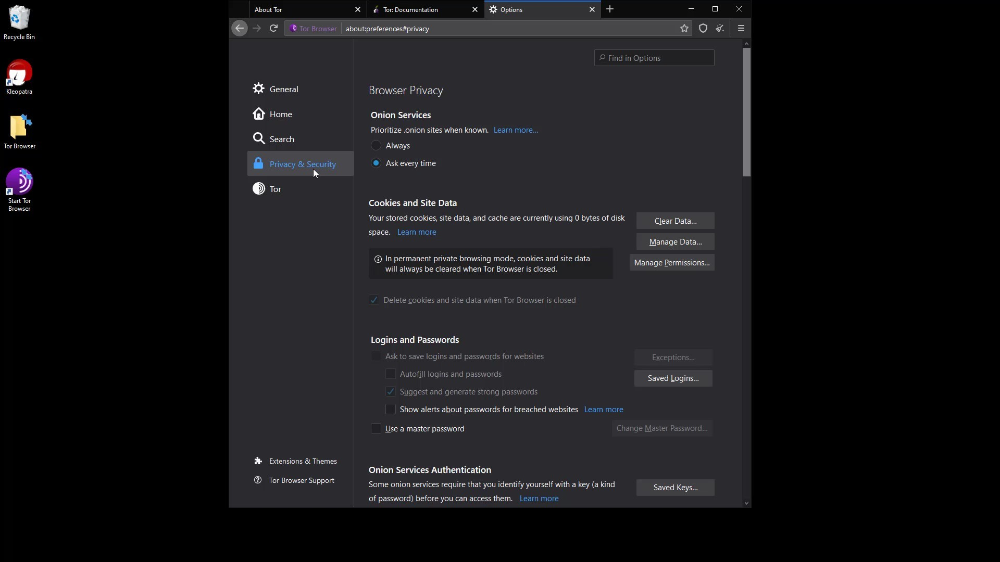
Onion Services

With this setting, "onion available" info will appear if the website you are visiting has a known onion service address. You can visit torproject.org to try it out.
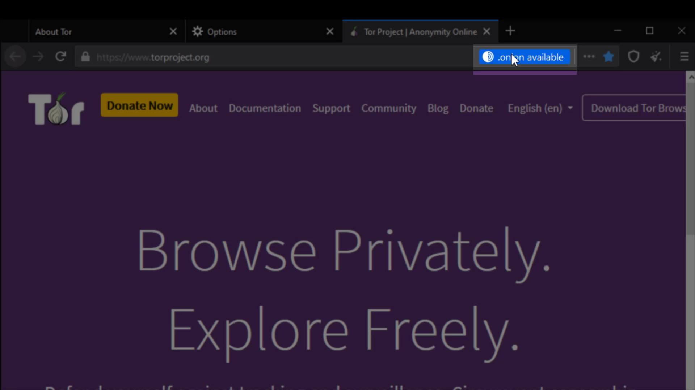
As you can see, it is stated here that the website you visited has an onion address. If you click on it, you will be redirected to the onion address.
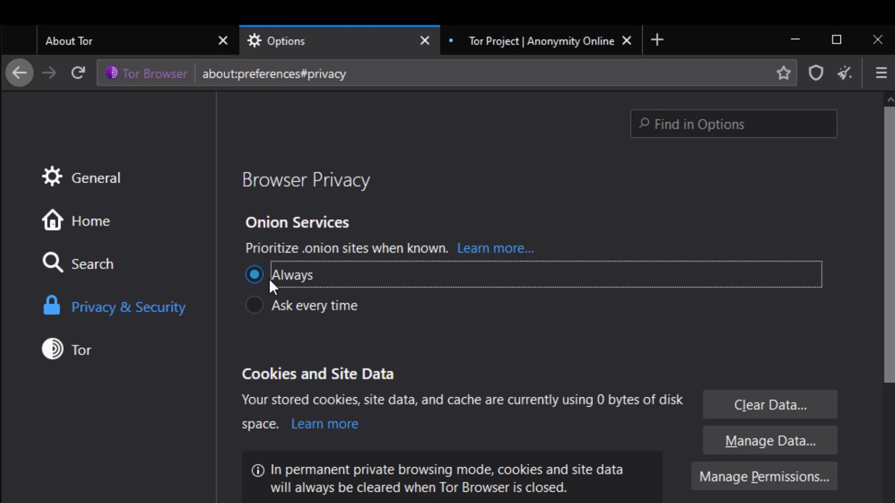
You can visit torproject.org again to try it out. As you can see you automatically redirected onion address.Cookies and Site Data

The settings in this section allow you to control the cached data of the sites. You can perform operations such as deleting and managing from here. However, as you can see, all data records are currently marked to be deleted automatically when you close the browser.
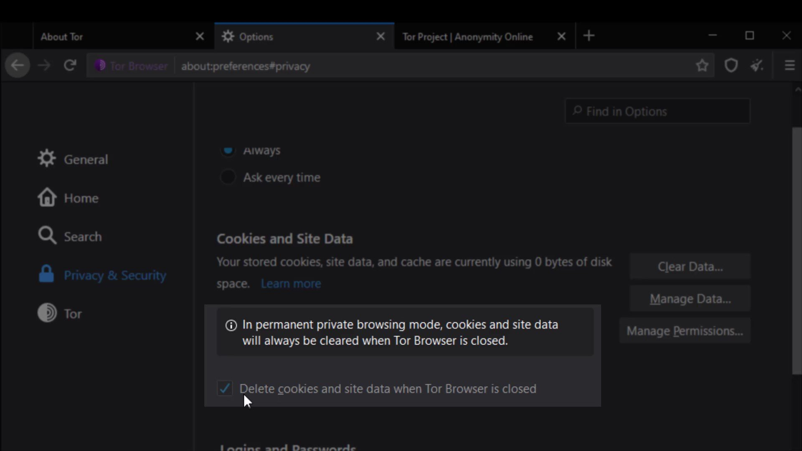
This is because the " Always use private browsing mode " option at the bottom is active. With this feature, you can use your Tor browser without leaving any traces about any website.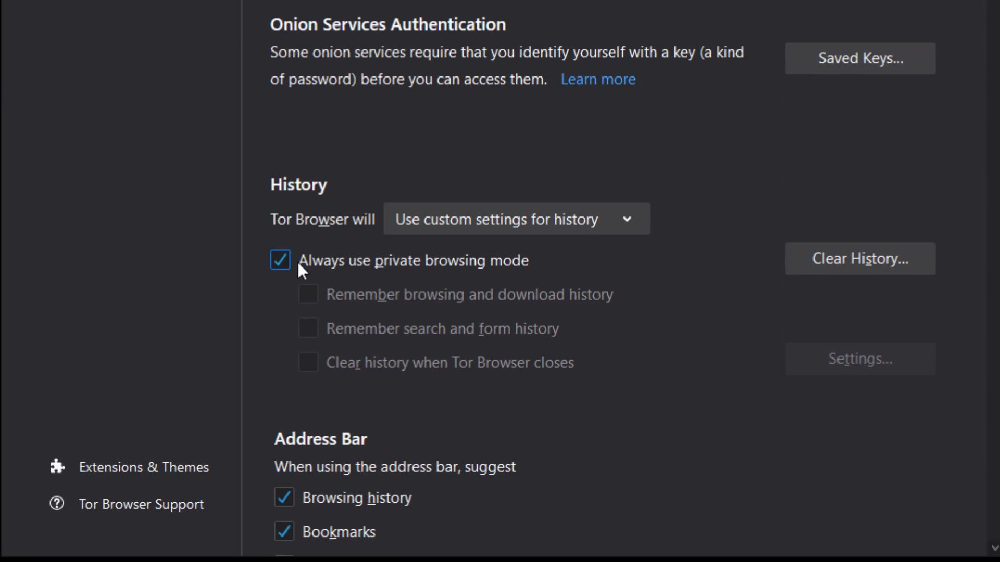
My suggestion is to keep this setting active to ensure privacy. However, if you still want to keep the data of your past visits and visited sites, you can customize the settings here as you wish.Logins and passwords

The "Use master password" feature here ensures that if there are passwords for your logins in the Tor browser, these passwords are also protected with a master password. This means that If you create a Master Password you will be asked to enter it once per session when Tor Browser retrieves saved information protected by the password. In other words, it provides an extra protection for local security. This feature prevents someone who has accessed your browser locally from accessing your information. I mean by the "accessing locally", it describes situations such as your computer being for inspection or hacking by someone.

Permissions
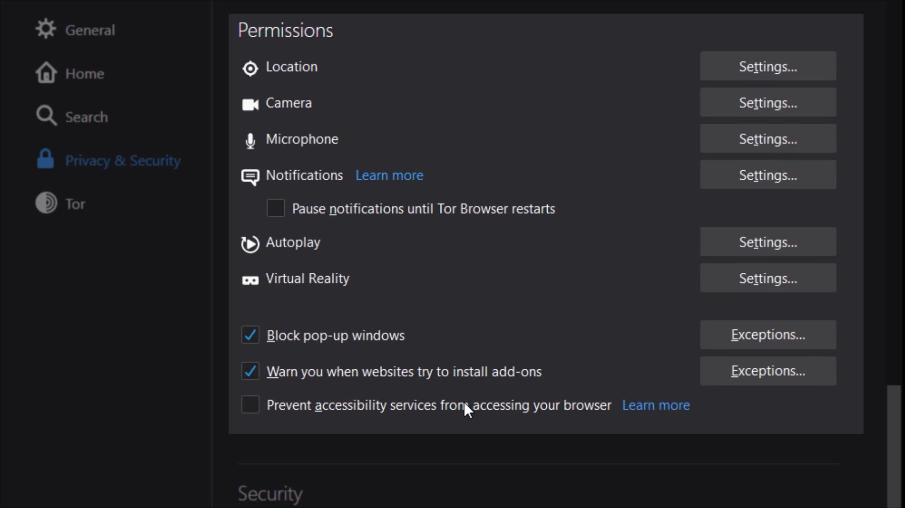
While we were talking about permissions earlier, we mentioned that you can define special permissions settings to websites. Unlike the permission settings we mentioned earlier, the permissions setting here allows you to define common permission setting for all websites in the tor browser.
For example, if you take a look at the location setting; In the window that opens, if you have defined a website that can access location information exceptionally, it will appear. In addition , it will be sufficient to check the " Block new requests asking to access your location" option below to completely block location information except for exceptional websites .

I suggest you select this option for all permissions one by one if not selected by default. Since you can change these permissions specific to the website, it would be much better to block these permissions altogether in order to ensure general protection.
In addition, I strongly recommend that you choose the " Prevent accessibility services from accessing your browser " option under the permissions .
To fully understand the purpose of this feature, you can get brief information here. However, as I said, my suggestion is to prevent accessibility services from accessing the browser if you don't need to use accessibility services.Security

In this section, there are security levels that you can use to neutralize possible attacks from all websites you visit or will visit.
If the "standard" security level is selected, your browser will behave just like an standard web browser, vulnerable to many possible attacks from websites. It has already been state here that all tor browser and website features will be enable at this security level. So this option does not impose any restrictions.
If the "safer" security level is selected , partial security is provided by disabling the features specified in the list. Of course, there may be losses in the functionality of the site used together with the closed features.
If the "safest" security level is selected , many features of websites will be disabled for even more comprehensive security. It is generally used to access the website in a much more simple and secure way. Disabled features are noted in the list.
Please also note that all disabled features may vary based on discovered vulnerabilities over time. In other words, in addition to the features that appear in me now, different features may have been disabled in the period you use.
Ultimately, using these security levels, you have to choose and consider the status of the website you want to communicate with. If the website you are visiting is unreliable and you still have to visit it, you can choose "safest" security level. Or, if the surface is one of the reliable services on the web, you can just select "standard " or "safer " option. It's all about what you can expect from the website and what kind of the site is.
Deceptive Content and Dangerous Software Protection

If you activate the feature in this section, you will be warned before accessing content with a previously reported security risk. In additionally if you want to block dangerous downloads you can activate "block dangerous downloads" option. Enabled this feature can help you avoid unintentional security risks.
Certificates
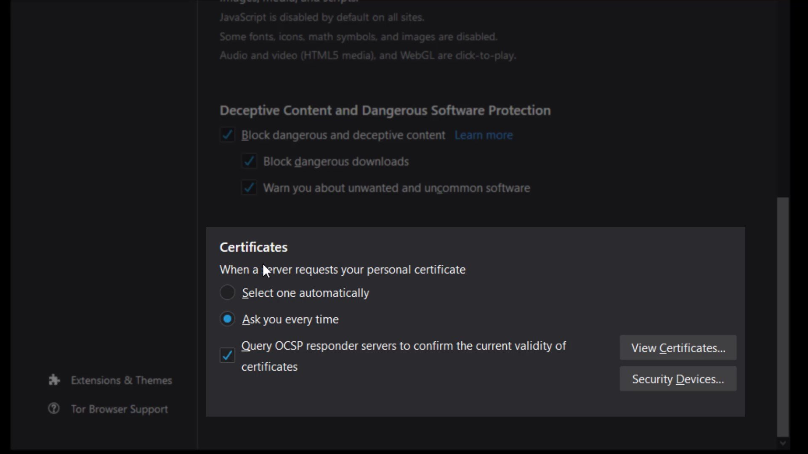
It would be more better choice to keep the certificate settings "ask you every time" selected. However, if you have a special situation, you can choose to "select one automatically".
Details for Additional Security
Extensions to secure the browser are already installed by default. Apart from these, it is strongly not recommended to install new extensions.
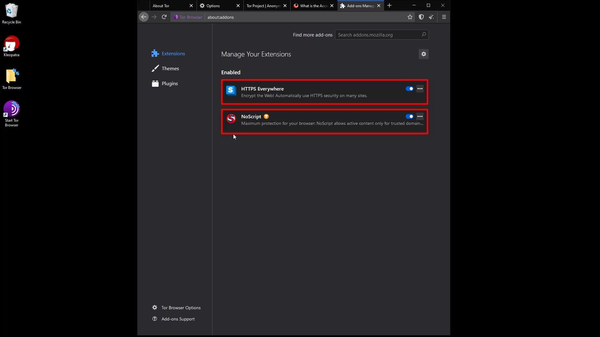
Similar to extensions, I strongly recommend that you don't install new themes and use the default theme among existing themes. It is never recommended to change such default settings for a much more ambiguous user identity we mentioned earlier.
Installing new extensions can affect Tor Browser in unpredictable ways, causing the Tor browser you are using to create a unique fingerprint. If your Tor browser has a unique fingerprint, that is, if you have a usage habit that can be noticed among other users, your actions will no longer be anonymous and you can be tracked even if you are using Tor Browser.
Basically, the settings and features of each web browser create a unique " web browser fingerprint ". Since most web browsers do not care about this, each user can create a unique fingerprint that can be tracked on the internet. Unlike standard browsers, the Tor browser is specifically designed to ensure that users' fingerprints are nearly the same. This means that the fingerprints of all Tor Browser users are similar. This situation makes it difficult to track tor user.
Also, each new extension has the potential to increase the attack surface of the Tor Browser application. This could cause personal data to be leaked or an attacker to infect Tor Browser with malware. Even the extension itself may have been maliciously designed to track you.
Tor Browser application comes with "HTTPS Everywhere" and "NoScript" extensions installed. Installing a extension other than that may prevent you from being anonymous. However, over time, there may be changes in the extension used by default, that is, the extension that come with the Tor browser. If this is the case, the Tor browser has made it available because it is sure of the security and benefits of this extension . However, if you are skeptical about the any extension , you can find a lot of information about why the add-on is located on the Tor browser and its possible effects by doing a short internet search. You can also follow the Tor project's blog to many such news.
For now, adding a new extension is not on the agenda, but this situation may have changed during the period you followed the course. To stay safe, I recommend you to be a conscious user, that is, to constantly question and research. Please note that when it comes to security, you have a very large part of the responsibility.
Similar to the previous clauses, the use of plugins or language packs should not be used as it may pose a risk to the integrity of your privacy.
Finally, I don't recommend using the browser in full screen mode or maximized mode. If you use full screen, you may leak information about the size of the screen you are using. This seemingly unimportant detail is important, and as a habit, I strongly recommend using your browser always with standard windowed size. If all these measures seem too much for you, I would like to point out that security is a whole and the number of details who should pay attention according to the needs of people must increase at the expense of being paranoid. If I need to give a simple but striking example for the moment; It turned out that data can be stolen from isolated computers without internet connection by changing the screen brightness.
So when it comes to security and privacy, it isn't strange to be paranoid. Please keep in mind that security is just a temporary illusion, that illusion tricks have to be exposed when the day comes. In short, in the real world, security is just a perception, we only think we are safe until it is violated. While the sense of temporary security is good for well-being, in most cases it is the complacency it provides that brings the real security risk. I'm not saying be paranoid, but I always wanted to mention that it will be a good habit to research what you can do for more security.